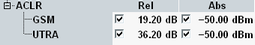

The adjacent channel leakage power ratio (ACLR) limits complement the spectrum emission mask. The limits can be set in the configuration dialog.

According to 3GPP, the relative limit must be evaluated only, if the measured adjacent channel power is greater than -50 dBm (absolute limit). In that case, the ACLR must be greater than the limits listed in the following table. The ACLR is defined as the mean power in the NB-IoT channel divided by the mean power in an adjacent GSM or UTRA channel.
The default settings are suitable to check the 3GPP requirements. The relative limits are only evaluated, if the corresponding absolute limit is exceeded. If you disable an absolute limit, the corresponding enabled relative limit is always evaluated.